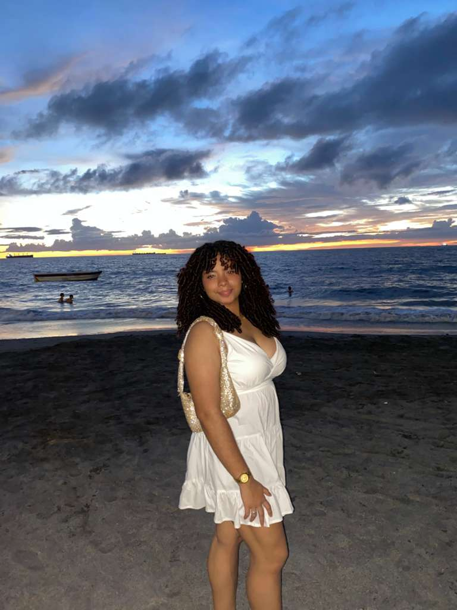
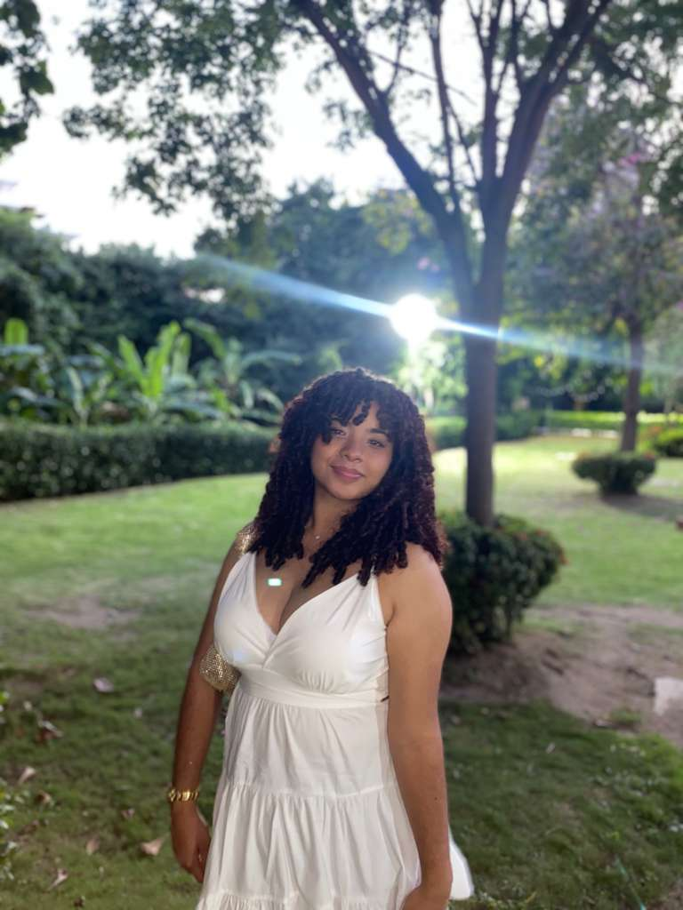
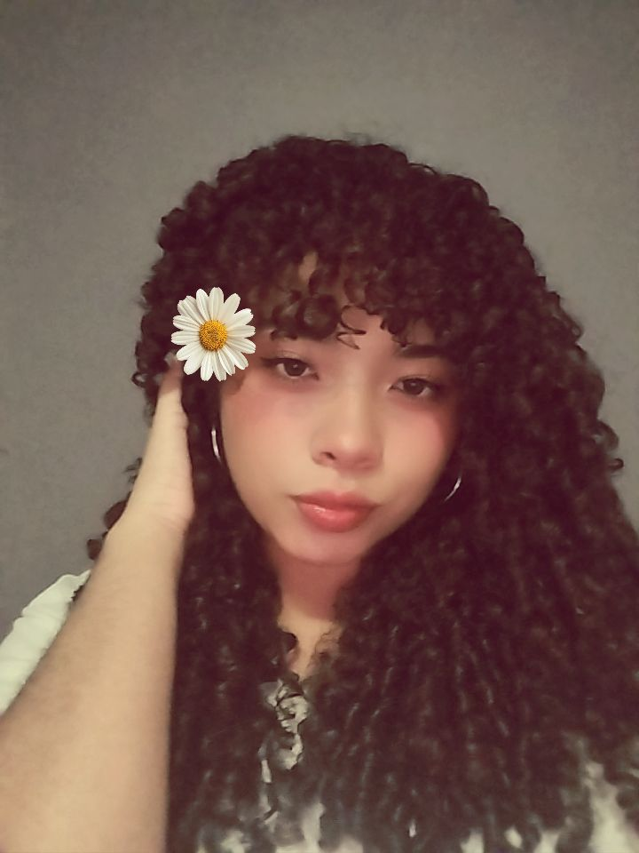
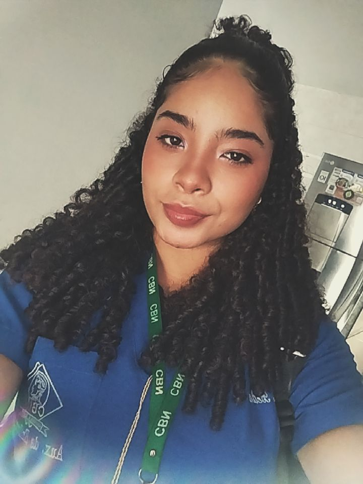
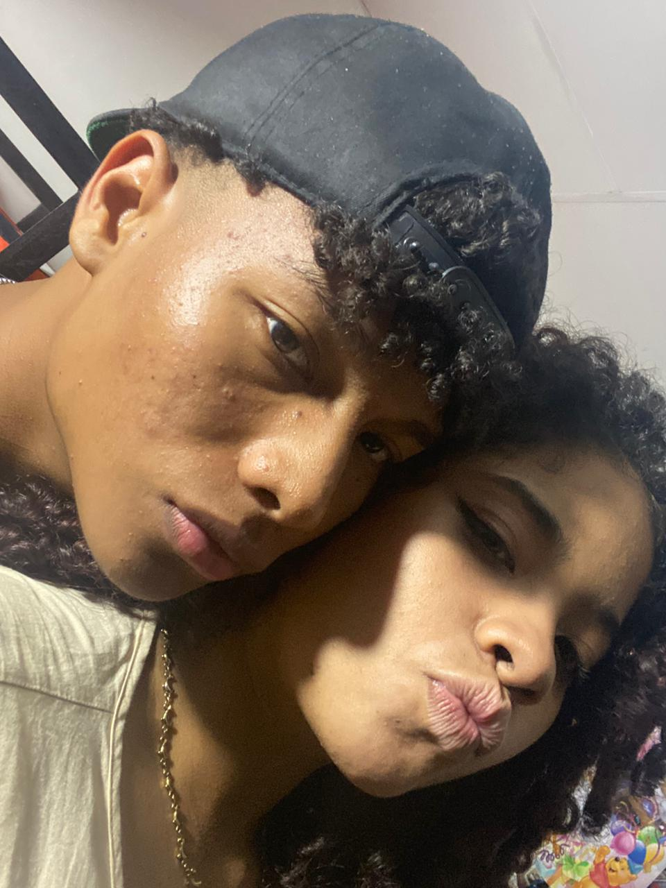

El inicio de tu vocación
Un día decidiste que querías cuidar la salud de los demás, y desde ahí no has dejado de luchar por ese sueño.
Nuevo logro desbloqueado 🩺
Hoy celebramos tu esfuerzo, tu corazón gigante y todas las vidas que vas a tocar como auxiliar de enfermería. Este logro es solo el comienzo de todo lo increíble que viene para ti.

Auxiliar de enfermería graduada
Corazón que cuida, manos que sanan.
Logro alcanzado: GRADUADA
Cada desvelo, cada práctica, cada examen y cada paciente te trajeron hasta este momento. No fue fácil, pero lo hiciste con el corazón.
Un día decidiste que querías cuidar la salud de los demás, y desde ahí no has dejado de luchar por ese sueño.
Horas y horas estudiando anatomía, medicamentos, cuidados, protocolos y todo lo necesario para dar siempre lo mejor.
No solo aprendiste técnicas, también a acompañar con cariño, paciencia y empatía a quienes más lo necesitan.
Hoy te pones la toga, recibes tu título y ves cómo todo el esfuerzo se convierte en orgullo, alegría y futuro.
Aquí van esos momentos donde tu sonrisa y tu corazón de doctora se roban toda la atención.




Cada día valió la pena para llegar a este momento.
Tu manera de cuidar a los demás es tu superpoder.
Lo que viene ahora será aún más grande y hermoso.